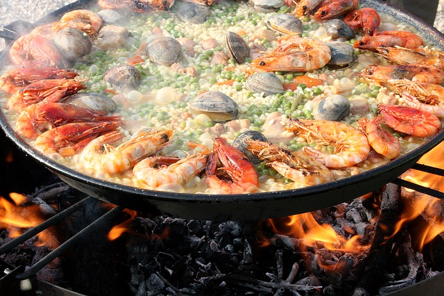

PAELLA |
Ingredientes
- 400 gr de arroz redondo.
- 800 ml de caldo de pescado (puede ser comprado, pero si vas a la pescadería pide unas cabezas de pescado, y solo con estas o la carcasa, metidas en el agua, aportarán el sabor ideal para la elaboración).
- 1 sepia grande o 2 medianas.
- 12 gambas.
- 6 cigalas.
- 250 gr de almejas o chirlas.
- 250 gr de mejillones.
- 150 gr de Guisantes.
- 1 cebolla mediana.
- 1 pimiento rojo.
- Azafrán.
- Sal.
- Perejil.
- Un diente de ajo
- 2 tomates maduros
|
 |
| Paso a paso |
- Para empezar pondremos un buen chorro de aceite a la Paella y una vez caliente agregaremos el marisco: gambas, cigalas y almejas –que previamente habremos limpiado con agua-, cuando estén dorados los retiramos y reservamos aparte.
- Seguidamente cocinaremos la sepia troceada, hasta que quede dorada. La retiraremos y la reservaremos.
- A continuación, sofreímos la cebolla y el ajo bien picaditos y el pimiento cortado a tiras. Dejaremos que se sofría bien, hasta que quede blandito, y retiraremos sólo el pimiento. En esta parte, agregaremos también la tinta de la sepia para que la preparación coja más sabor de pescado.
- Añadimos los tomates rallados y vamos mezclando hasta que estén cocinados.
- Es el momento de poner el arroz. Lo iremos removiendo durante un rato. La idea es que quede bien impregnado de la salsa para que tenga más sabor. Pasados unos minutos añadiremos el caldo de pescado, la sal y el azafrán.
- Agregaremos el resto de los ingredientes que habíamos retirado, de manera bonita y ordenada –como ejemplo tenéis la foto– a partir de este momento ya no removeremos más los ingredientes.
- Subimos el fuego a nivel alto hasta que empiece a hervir y una vez hierva el agua, lo mantendremos a fuego lento durante unos 20 minutos.
- Retirar la paella del fuego y dejar reposar 5 minutos antes de servir.
- Puedes cortar unos gajos de limón y ponerlos alrededor de la paella, esto le dará un toque fresco y una nota de color a la presentación de tu plato.
|
|
Inicio
|
COCIDO MADRILEÑO |
Ingredientes
- 250 gr de garbanzos.
- 3 zanahorias.
- 1 repollo.
- 1 punta de jamón.
- 300 gr. de panceta o tocino.
- 1 morcilla.
- 3 chorizos de guisar.
- 1 caparazón de pollo.
- 500 gr de carne de morcillo.
- 4 patatas.
|
 |
| Paso a paso |
- Ponemos a remojo unos buenos garbanzos castellanos la noche de antes, con un puñado de sal gorda marina.
- Ponemos a cocer, partiendo de agua fría, la carne, la punta de jamón, la panceta y el pollo. Durante todo el cocido, de principio a fin, retiraremos la espuma que se vaya formando con una espumadera. Así mismo iremos incorporando agua para que no se quede seco.
- Cuando empiece a hervir añadimos los garbanzos, previamente escurridos y lavados; salamos y cocemos de dos horas a tres horas, dependiendo de la dureza de los garbanzos.
- Cuando falte unos treinta minutos para el final, pondremos a cocer el repollo en un puchero aparte. Y en el puchero del cocido propiamente dicho, añadiremos los chorizos, las morcillas y las zanahorias peladas y partidas en trozos grandes.
- Cuando queden unos quince minutos añadiremos las patatas al puchero del cocido madrileño.
- Al finalizar, colamos el caldo y hacemos la sopa, que podrá ser de fideos, de lluvia, etc.
- El cocido madrileño se sirve en la mesa. En un puchero tendremos la carne con los garbanzos, en otro la sopa y en otro la verdura con las patatas y zanahorias.
|
|
Inicio
|
TORTILLA DE PATATAS |
Ingredientes
- 4 huevos.
- 5 patatas medianas.
- Aceite de oliva virgen extra.
- Sal.
|
|
| Paso a paso |
- Pelamos y lavamos bien las patatas, las cortamos en trozos finos y no demasiado grandes.
- Una vez cortadas las volvemos a enjuagar bajo del grifo para eliminar el exceso de almidón.
- Ponemos una sartén al fuego con abundante aceite de oliva virgen extra, es muy importante que las patatas se frían bien, y que las patatas queden fritas pero no excesivamente doradas.
- Batimos en un bol bien los huevos y cuando las patatas estén hechas las añadimos a los huevos y salamos.
- En una sartén mas pequeña ponemos un chorrito de aceite de oliva dejamos calentar y echamos la mezcla dejamos que cuaje un poco y damos la vuelta.
- Yo le doy un par de vueltas primero y luego dejo dorar, de manera que queda tostada por fuera y no esta seca por dentro.
- Podéis ponerle también cebolla a la tortilla, eso va a gustos, a mi me encantan de las dos maneras la verdad para que os voy a engañar.
|